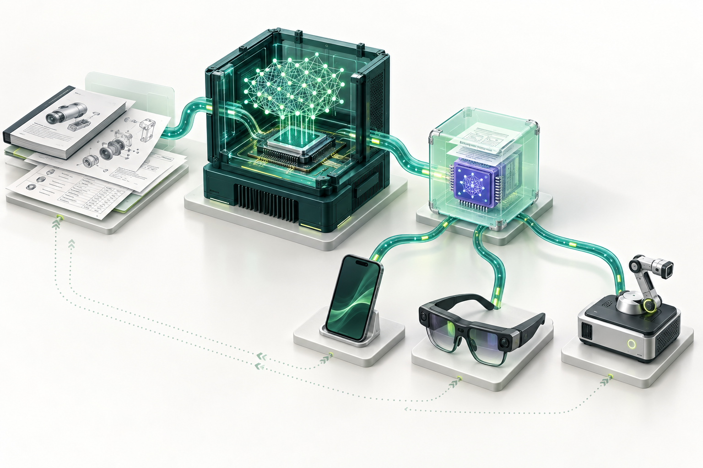
设备技能基础设施
旧版第 1 页
edge-skills-infrastructure.png
从旧版 19 页 SVG 中提取的原始 PNG，与原 imagegen 素材一致。同一张图仅保留一份，页码注明使用位置。
点击图片打开完整原图。以下均为 AI 概念效果图，可供改稿复用。

旧版第 1 页
edge-skills-infrastructure.png
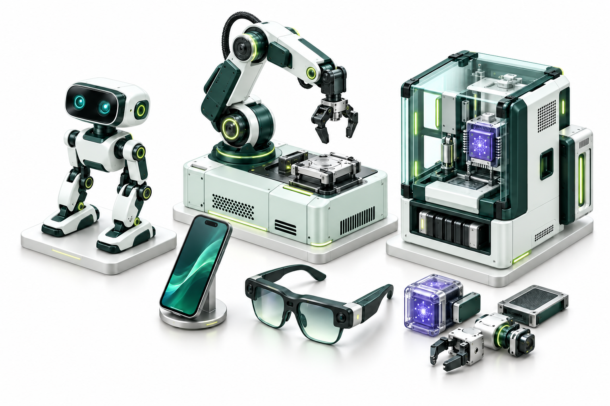
旧版第 3 页
device-capability-landscape.png
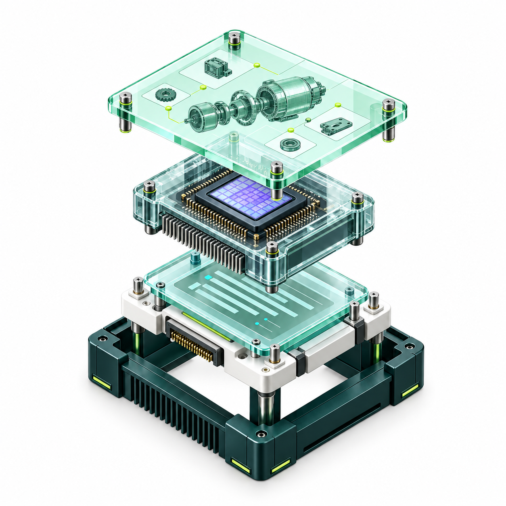
旧版第 4 页
versioned-capability-assembly.png
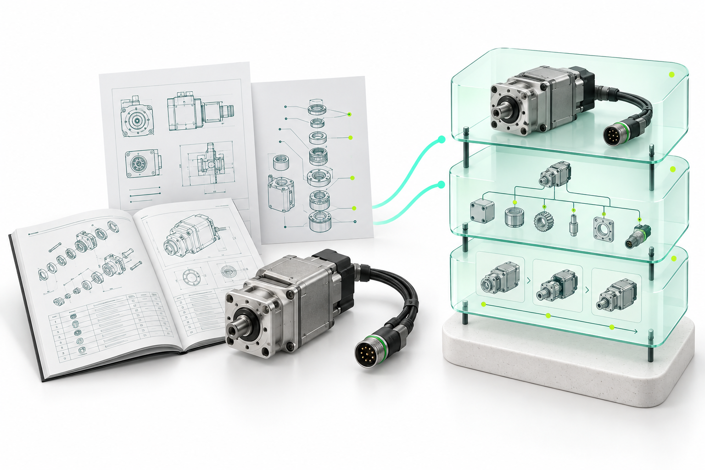
旧版第 5 页
materials-to-pskill.png
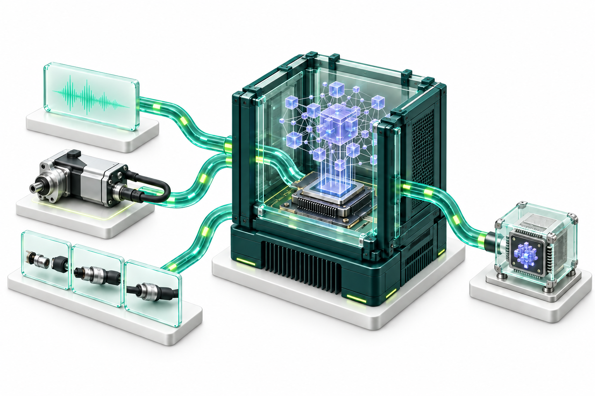
旧版第 6 页
multimodal-domain-training.png
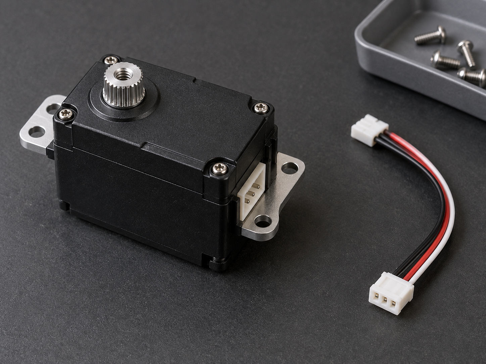
旧版第 6 页
spare-actuator.png
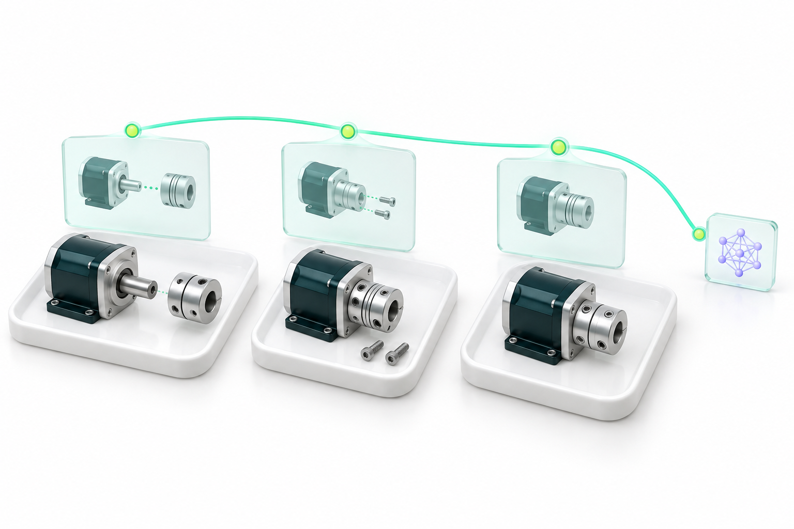
旧版第 7 页
eg-task-alignment.png
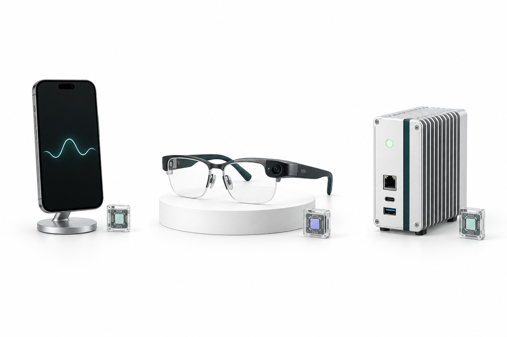
旧版第 9 页
edge-terminal-distribution.png
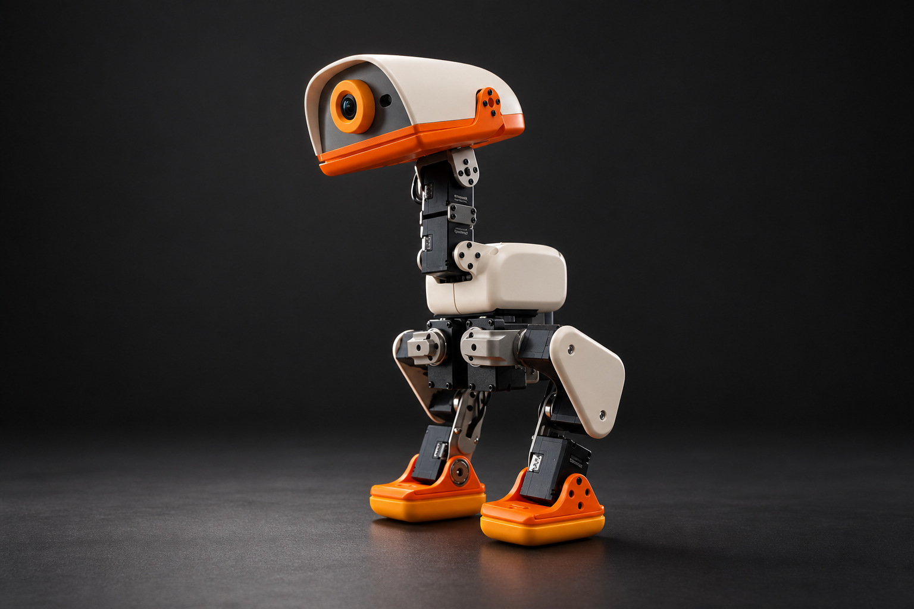
旧版第 9、13 页
microduck-studio.png
旧版第 10、11 页
ar-technician.png
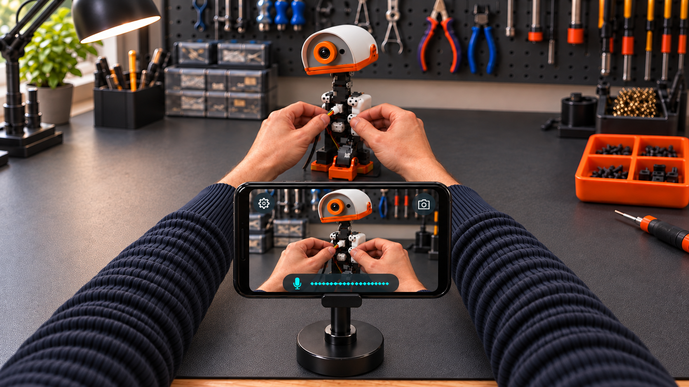
旧版第 10 页
phone-handsfree-workbench-arm-fixed.png
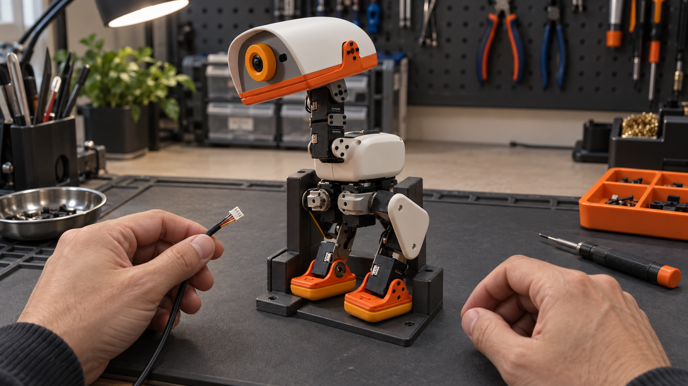
旧版第 10、11 页
service-workbench.png
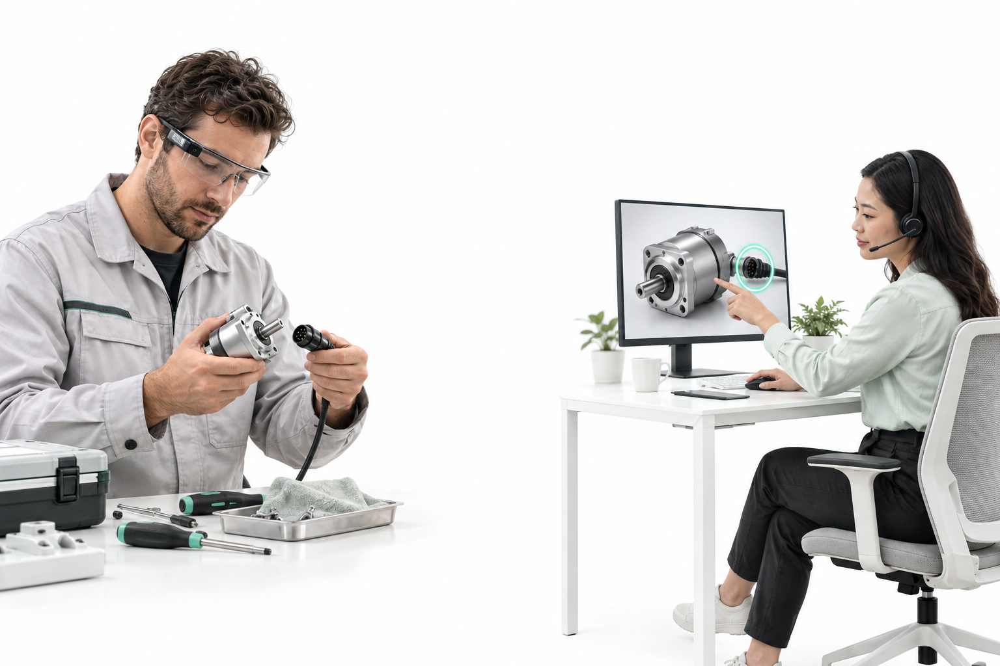
旧版第 11 页
engineer-remote-assist.png
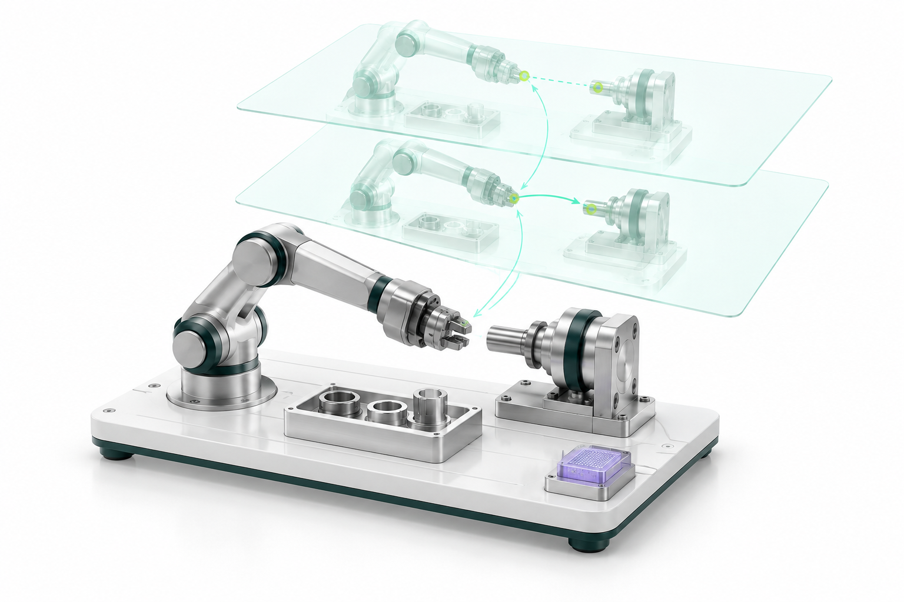
旧版第 12 页
world-model-testbed.png
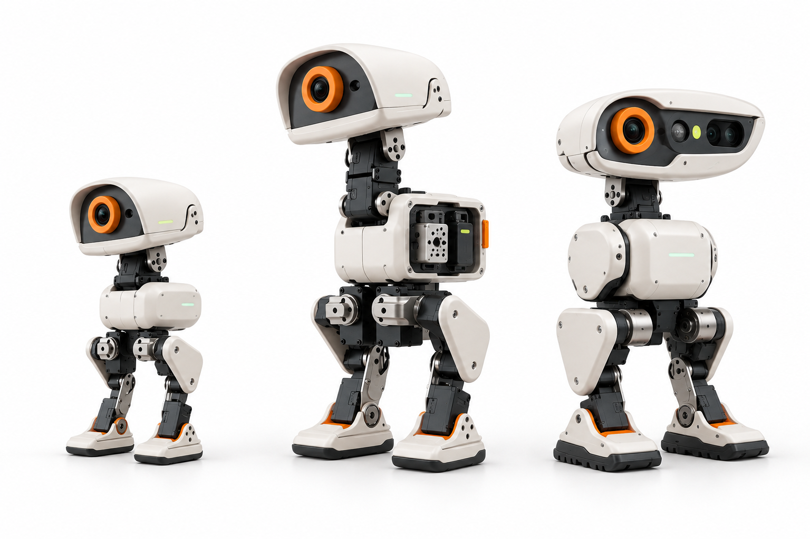
旧版第 13 页
microduck-product-family.png